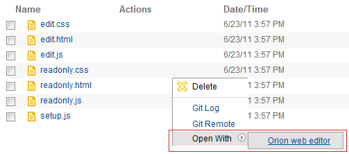

| orion.navigate.openWith | ||
|---|---|---|
|
|
|
|
| orion.navigate.command | Updating this document | |
The orion.navigate.openWith service is used to contribute the location of an editor for a particular file type. This service is purely declarative, with no implementation methods required.
None
Implementations of orion.navigate.openWith must define the following attributes:
Here is a sample plug-in that contributes a link to a Google search for the selected file's name:
var serviceImpl = {};
var serviceProperties = {
name: "Orion web editor",
href: "/edit/edit.html#${Location}",
validationProperties: {Name: "*.(css|js|htm|html|txt|xml|java)"}
};
provider.registerServiceProvider("orion.navigate.openWith", serviceImpl, serviceProperties);
When this plug-in is installed, the user will see Orion web editor as an available target in the Open With Navigator menu as follows:

|
|

|
|
| orion.navigate.command | Updating this document |